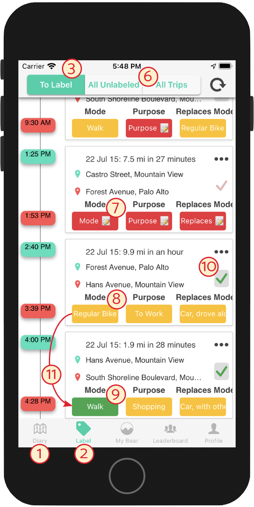
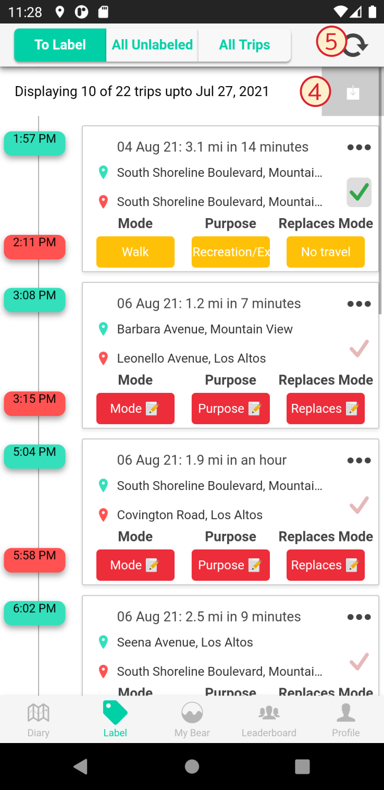

The Label screen on iOS after the update; numbers correspond to in-text references

The Label screen on Android scrolled up to show the button to load older trips
What is the new Label screen interface?
Recently, we began testing a new look for the app's Label screen 1. The purpose of the new interface is to reduce the amount of labeling work you have to do by trying to guess labels for you.
How should I use the new interface?
Instead of using the Diary screen 2 to label trips, use the Label screen 1. Trips take a little longer to appear here — about an hour if you are connected to the Internet — but once they do they will be more accurate. Within the Label screen, there are a few tabs, including one called “To Label” 3. On this screen, only the trips that you need to label will appear; when you label them, they will automatically disappear after a minute. To Label is the only tab you need to consult, and once there are no more trips there, you are done labeling for the day. See below for how to use some more time-saving features we've added.
Any major changes to how trips are displayed?
Before, the newest trip appeared at the top of the screen and you scrolled down to get to more, like an email inbox. Now, the newest trip appears at the bottom of the screen and you scroll up to get more, like a texting app. Also, to load older trips, you now have to click a button 4. The reload button 5 reloads information for the time period you already have loaded, just like before.
Why are some of my trips not appearing?
The “To Label” tab only shows trips that you need to label. For some of your trips, an algorithm was able to predict what the labels were so accurately that you don't need to tell us anything about those trips. If you want to see all of your unlabeled trips or all of your trips anyway, you can use the “All Unlabeled” and “All Trips” tabs 6 (to see the trip you're looking for, you may have to load older trips 4). However, you only ever have to label the trips that appear in To Label.
What do the red, yellow, and green label colors mean?
Red 7 means we were not able to predict anything for that label and you should enter it manually just like before. Yellow 8 means we tried to predict something, but if the trip is on the To Label screen we need you to confirm that this prediction is correct. If it's correct, you can use the “confirm” button (see below). If it's incorrect, you can correct it as if it were a red label. Green 9 means you have already manually entered or confirmed the label.
What does the checkmark button do?
Each trip on the Label screen now has a checkmark button 10. If the trip has any yellow labels, pressing this button will turn them green and let us know that those yellow labels are correct. Only press this button if the yellow labels are correct! If some of them are correct and some of them are incorrect, you can correct the ones that need correcting and then push the button. The checkmark button doesn't do anything to red or green labels.
How does the prediction algorithm work?
The prediction algorithm tries to match each trip you take to a trip you have taken before. For instance, if you bike to work every day and label that trip, eventually the algorithm will learn what biking to work looks like and be able to automatically enter those labels for you. This works better the more times you take a certain trip, so if you take a new trip, the algorithm will not be able to predict it for you. It also only works if you've labeled your trips in the past — labeling trips will eventually keep you from having to label as many trips!
If the same trip sometimes has different labels (e.g. if you mostly bike to work but sometimes take the bus), the algorithm will first predict the most common. But if you correct one of the labels for one of these trips 11, the algorithm will try to instantly correct the trip's other labels for you.
Why do certain trips sometimes appear under To Label and sometimes not?
The exact requirements for a trip to appear in To Label may change from time to time so that we can collect the most useful data while requiring you to do the least amount of work.
How has the Diary screen changed?
The Diary screen has not changed at all. None of the new features (e.g., the yellow labels, the confirm button, only seeing trips you need to label) work on the Diary screen. So we recommend you do your labeling on the Label screen!
I love algorithms! Can I have more details?
We group all your trips so that trips with the same start and end location are in the same bin. We then look at the labels for those trips and how often they occur. If a trip has (shared_ride,work,drove_alone) labels 60% of the time, and (drove_alone,work,shared_ride) 40% of the time, we will display the highest probability label - e.g. (shared_ride,work,drove_alone) but, most of the time, ask you to confirm it. If it occurs 100% of the time, though, we don't even need to ask you beyond the first few times because we are pretty sure that is right.
But what if you used to carpool to work consistently, but now you started riding your spiffy new ebike? To detect such changes, we will periodically go from the usual "relaxed" mode to an "intensive" mode, where we will ask you to label all your trips for a week.
To summarize, as your travel patterns change - you switch jobs or modes or take up a new hobby - your trip locations and probabilities will change over time. But as long as we can get the correct labels periodically, the algorithm will update itself with the new probabilities and continue making your life easier.
We are committed to an open and transparent platform - for more technical details, see the related discussions at https://github.com/e-mission/e-mission-docs/issues
What if I have questions or comments on the new labeling interface?
For now, please email K. Shankari at the National Renewable Energy Laboratory (NREL): k.shankari@nrel.gov. Later on, we may send out a form to collect your feedback on the new interface.